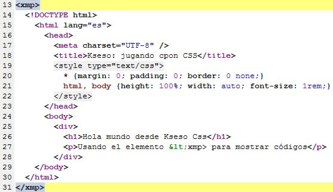

HTML
HTML es el acrónimo en inglés de HyperText Markup Language (en español se traduce como lenguaje de marcado de hipertexto). Cabe destacar que HTML no es un lenguaje de programación ya que no cuenta con funciones aritméticas, variables o estructuras de control propias de los lenguajes de programación, por lo que HTML genera únicamente páginas web estáticas, sin embargo, HTML se puede usar en conjunto con diversos lenguajes de programación para la creación de páginas web dinámicas.
HTML es un lenguaje de marcación que sirve para definir el contenido de las páginas web. Se compone en base a etiquetas, también llamadas marcas o tags, con las cuales conseguimos expresar las partes de un documento, cabecera, cuerpo, encabezados, párrafos, etc. En definitiva, el contenido de una página web.
Básicamente el lenguaje HTML sirve para describir la estructura básica de una página y organizar la forma en que se mostrará su contenido, se trata de un conjunto de etiquetas que sirven para definir el texto y otros elementos que compondrán una página web, como imágenes, listas, tablas, etc. Además de que HTML permite incluir enlaces (links) hacia otras páginas o documentos.
Para desarrollar una página web en HTML es necesario crear un documento HTML. Básicamente un documento HTML es un archivo de texto que tienen la extensión .html o .htm, en este documento se escriben todo el texto y las etiquetas HTML necesarias para la creación de una página, al texto escrito en el documento HTML se le llama código HTML. Un documento HTML se puede generar con cualquier editor de textos simple como el bloc de notas de Windows.
Historia
HTML es un derivado de SGML y nació en 1991, gracias a Tim Berners-Lee (que trabajaba en el CERN), que ante la necesidad de compartir información entre científicos creó la primera definición del lenguaje. En la primera publicación del HTML incluía un total de 22 etiquetas sin embargo actualmente solo permanecen como 12 de ellas. En 1993 fue creado el borrador por la ITEF para definir definitivamente HTML como un estándar, que además incluía una definición de tipo de documento SGML, que definía su gramática. Este borrador no llegó a buen puerto, pero fue el inicio para que Mosaic (aquel histórico navegador) tuviese un gran éxito. Paralelamente surgió otro borrador que definía HTML+, que incorporaba también las tablas en la definición de las características.
La IEFT creó en 1994 el HTML Working Group, que definió la especificación de HTML2.0. Esta vez, también de forma paralela a HTML2.0 surgió la propuesta de HTML3.0, que no tuvo prácticamente relevancia mientras estaba presente HTML2.0. En 1997, eran muchas las empresas que querían tomar decisiones sobre HTML se creó el W3C y se dejó de influir el IEFT. En enero de 1997 se publico HTML3.2 como recomendación de la W3C, que fue la primera definición redactada exclusivamente por el consorcio, fuertemente influenciado por Netscape.
A mediados del 2000 se creó la normativa ISO que definió HTML4.01 (strict) como estándar internacional. Tras la estandarización surgieron las alternativas basadas en XML, que era XHTML (teniendo la versión 1.0, 1.1, 2.0 y la supuesta XHTML5). En 2004 se creó la Web Hypertext Application Technology Working Group (WHATWG), con el propósito de crear un nuevo estándar que consiga llevar la web a un nivel que solo se conseguía gracias a Flash.
Elementos

Son la estructura básica de HTML. Tienen dos propiedades básicas: atributos y contenido.
Cada atributo y contenido tiene ciertas restricciones para que se considere válido al documento HTML.
Un elemento generalmente tiene una etiqueta de inicio (por ejemplo,
Marcados
El marcado estructural describe el propósito del texto.
El marcado presentacional describe la apariencia del texto, sin importar su función.
El marcado hipertextual se utiliza para enlazar partes del documento con otros documentos o con otras partes del mismo documento.
Etiquetas
Las etiquetas HTML son fragmentos de texto rodeados por corchetes angulares <>, que tienen funciones y usos específicos y se utilizan para escribir código HTML.
Tipos:
Semánticas
Para formato a fuente
Para formato a líneas
Para enlaces
Atributos
Una etiqueta por sí sola a veces no contiene la suficiente información para estar completamente definida. Para ello contamos con los atributos: pares nombre-valor separados por "=" y escritos en la etiqueta inicial de un elemento después del nombre del elemento.
Tipos:
Atributos básicos: Se utilizan en la mayoría de etiquetas HTML y XHTML, aunque adquieren mayor sentido cuando se utilizan hojas de estilo en cascada (CSS)
Atributos de internacionalización: Se utilizan en aquellas páginas que muestran sus contenidos en varios idiomas y las que quieran indicar de forma explícita el idioma de sus contenidos
Atributos de eventos: Se utilizan en las páginas web que incluyen código JavaScript para realizar acciones dinámicas sobre los elementos de la página
Atributos de foco: Se le denomina foco o focus, cuando un control o elemento del documento ha sido seleccionado
Video
A continuación un video del siguiente link donde nos enseña lo principal de html: https://www.youtube.com/watch?v=mNbnV3aN3KA